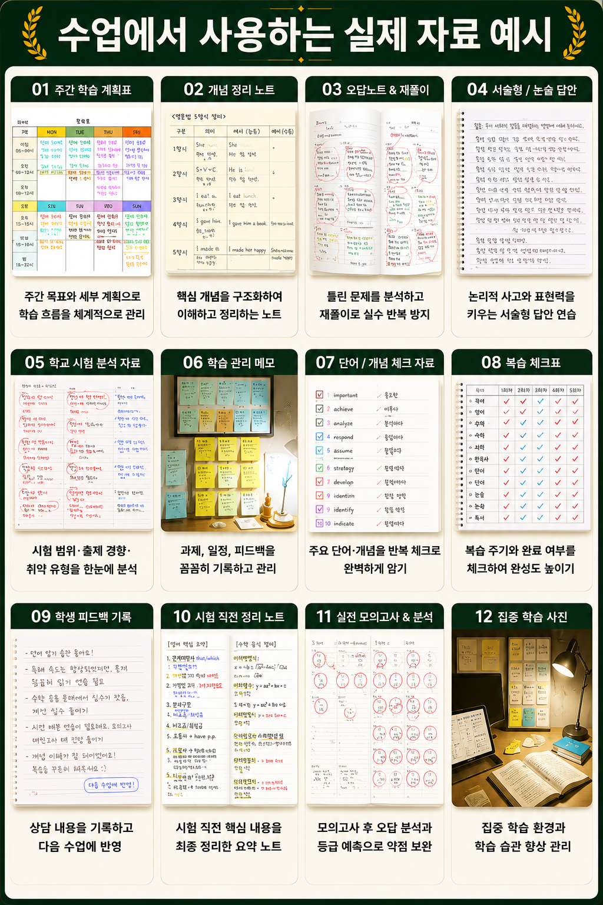
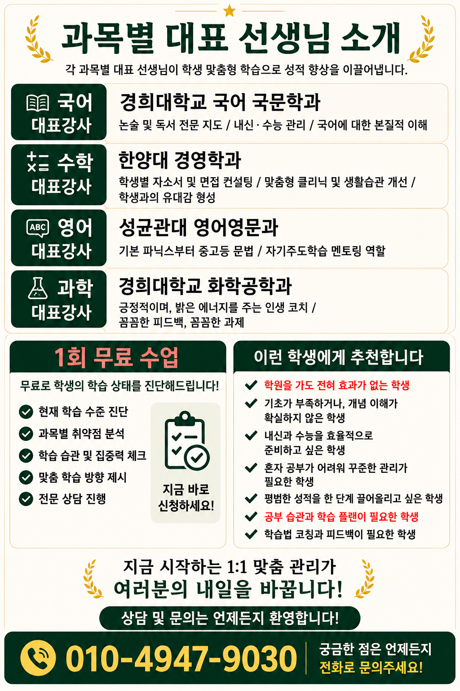

송림중과외 고등학교를 바라보는 학습 환경 분석
송림중과외 고등학교는 지역 사회에서의 안전한 학습 공간과 체계적인 진로 설계 인프라를 갖추고 있습니다. 교사와 학생, 학부모가 함께 소통하는 분위기가 특징이며, 교실 외 공간에서도 자율 학습이 가능하도록 도서관과 학습실이 잘 구성되어 있습니다. 학교의 수업 운영은 모듈형 수업과 지필 중심의 평가를 적절히 조합하고, 모의고사와 내신 관리에 필요한 정보 공유를 활성화하고 있습니다. 그러나 실제 학습 환경은 학년별, 학과별로 차이가 있을 수 있습니다. 예를 들어 과목별 집중도가 높은 일부 학년의 경우 실험실이나 실습 시간 변경에 따른 시간 관리 이슈가 발생할 수 있으며, 대다수 학부모는 시험 기간의 과도한 스트레스와 개인별 학습 속도 차이를 걱정합니다. 따라서 학교의 학습 환경 분석은 교실 내외의 물리적 공간뿐 아니라 시간 관리 체제, 피드백 루프, 학생자치활동의 활성도까지 포괄적으로 살펴보아야 합니다.
학생들이 자주 겪는 학습 문제
- 내신과 모의고사 점수의 변동 폭이 크고, 시험 주기마다 준비 전략이 달라지는 문제
- 과목 간 시간 분배의 비효율로 인한 공부 몰입도 저하
- 주요 과목의 기초 개념 저하로 인한 심화 학습의 부담 증가
- 노트 정리, 요약 습관 부재로 인한 복습 시간의 비효율
- 자기주도학습의 시작점과 방향성을 찾지 못하는 상황
내신 대비 전략
송림중과외 고등학교의 내신은 교과별 평가 항목의 비율과 실전형 문제 구성에 의해 영향을 받습니다. 핵심은 기초 개념의 확실한 이해와 체계적 암기, 그리고 꾸준한 예습·복습 루틴 확립입니다. 다음의 흐름을 권합니다:
- 주간 학습 계획표 작성: 과목별 목표점수와 주별 미해결 문제 리스트를 포함
- 기본→응용→마무리의 단계적 학습: 교과서 핵심 용어를 먼저 암기하고, 작은 문제에서 시작해 서술형으로 확장
- 오답노트의 체계화: 오답 원인을 분류하고 같은 유형의 문제를 재연습
- 모의고사 해설집 활용: 출제 경향을 파악하고 시간 관리 연습
- 과목 간 연결고리 찾기: 수학-과학, 언어-사회 등 맥락 파악으로 문제 풀이의 속도와 정확도 향상
과목별 공부 방법
과목별 핵심은 이해와 응용의 균형입니다. 송림중과외 고등학교의 교과과정에 맞춰 간단한 실천 방법을 제시합니다.
- 영어: 어휘·문법은 단기 암기보다 맥락 학습이 중요합니다. 매일 20분 읽기, 10분 문법 점검, 5분 어휘 테스트를 루틴화합니다.
- 수학: 개념 정리→예제 풀이→유형별 문제 연습의 흐름을 유지합니다. 매일 3개씩 새로운 유형의 문제를 해결하고, 잘 틀리는 유형은 '유형별 모음표'로 정리합니다.
- 과학: 실험 원리와 공식의 연결고리를 그림으로 표현하고, 물리·화학의 기본 법칙을 상황 문제에 적용하는 연습을 합니다.
- 사회/역사: 연표와 인물 중심의 흐름을 시각화하고, 서술형 대비를 위해 자료해석과 출처 확인 훈련을 병행합니다.
- 제2외국어: 기본 표현 암기를 넘어, 짧은 글쓰기와 말하기 연습으로 실전 활용 능력을 키웁니다.
자기주도학습 실천법
- 목표 설정과 피드백 루프: 주간 목표를 세우고, 주말에 스스로 피드백하는 습관
- 시간 관리: 특정 시간대에 집중하는 '집중 블록'을 만들고, 시간 추적 앱이나 단순한 타이머를 활용
- 학습 로그 기록: 하루 학습 내용, 어려웠던 부분, 다음 주 계획을 짧게 기록
- 동료 학습: 친구와의 짝학습으로 문제 풀이 전략 공유
- 건강 관리 병행: 수면, 식사, 휴식으로 학습 효율 유지
실제 학습 사례 1개
사례 주인공은 2학년 최모 학생으로, 수학과 영어에서 연속해서 모의고사 점수가 하락하는 상황이었습니다. 학교의 학습 환경 분석을 바탕으로, 최모 학생은 매일 40분의 집중 학습 블록을 수학과 영어에 배분하고, 오답노트를 유형별로 정리했습니다. 수학은 먼저 개념을 다시 확인한 뒤 3문제씩 새로운 유형의 문제를 풀고, 영어는 어휘 10개를 매일 외우고 짧은 문장을 작성해 피드백을 받았습니다. 8주 차에 모의고사에서 수학 점수는 15점 상승, 영어는 12점 상승을 기록했고, 이후 내신에서 원하는 등급으로 진입하는 기반을 다졌습니다. 이 사례는 내신 대비와 자기주도학습의 결합이 얼마나 중요한지 보여 줍니다.
학습 체크리스트
- 주간 학습 목표를 명확히 작성했다.
- 기초 개념과 핵심 용어를 확실히 이해했다.
- 오답노트를 유형별로 정리했다.
- 모의고사 해설을 분석해 출제 경향을 파악했다.
- 자기주도학습 로그를 꾸준히 기록했다.
FAQ
-
자주 묻는 질문: 송림중과외 고등학교의 내신 관리에서 가장 중요한 포인트는 무엇인가요?
핵심은 기초 개념의 확실한 이해와 꾸준한 복습입니다. 매일 짧은 시간에 기초 문제를 다루고, 주간 오답노트를 통해 문제 유형별 약점을 보완하세요.
-
학습 상담 질문: 송림중과외 고등학교에서 모의고사 대비는 어떻게 해야 하나요?
모의고사는 실전 연습이자 자신의 시간 관리 점검입니다. 시간 배분을 처음부터 연습하고, 해설 분석으로 출제 의도를 파악한 뒤 같은 유형의 문제를 반복 풀이합니다.
-
FAQ 3: 영어 성적 향상을 위한 실천 방법은?
매일 20분 독해, 10분 어휘 암기, 5분 문법 점검의 루틴을 만들고, 짧은 글을 write-and-get-feedback 방식으로 작성해 말하기와 쓰기를 강화합니다.
-
FAQ 4: 자기주도학습의 시작이 어렵다면?
작은 목표부터 시작하고, 매주 성과를 기록해 자신이 달성한 것을 시각화하십시오. 친구나 멘토와의 피드백 루프를 만들어 동기를 유지합니다.
-
FAQ 5: 송림중과외 고등학교에서 학습 습관을 유지하는 팁은?
일관된 학습 루틴, 충분한 휴식, 그리고 피드백을 반영하는 순환 구조를 유지하는 것이 중요합니다. 하루의 시작에 계획을 세우고, 끝에 성찰을 남깁니다.
지역 학습환경
송림중과외는 경기 성남시 이매동 생활권에서 송림중 학생의 학교 진도와 가정 학습 시간을 함께 맞추는 수업입니다. 경기는 신도시와 구도심, 대단지 주거권이 함께 있어 통학 동선과 방과후 시간을 학생별로 다르게 잡아야 합니다. 따라서 단순히 가까운 과외를 찾는 것보다 학교별 시험 범위, 수행평가 일정, 학생의 실제 복습 가능 시간을 함께 확인해야 합니다.
송림중 주변 생활권에서는 방과후 일정과 이동 시간이 학생마다 다르게 나타납니다. 수업 전에는 최근 시험지, 학교 프린트, 숙제 기록을 먼저 확인하고 수업 후에는 배운 내용을 짧게 다시 설명하는 루틴을 만드는 것이 좋습니다.